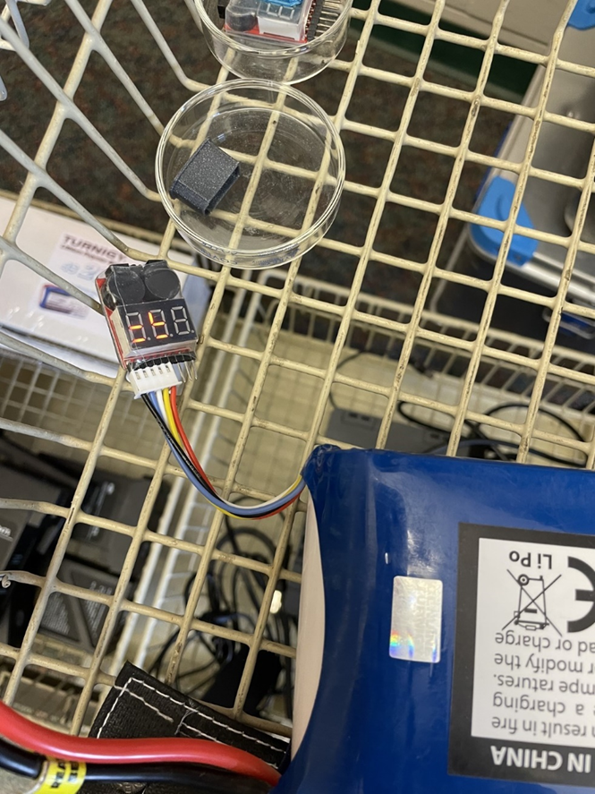

Operating Rovers in the Field
Instructions
How to Start a Mission in the Field
Battery Installation
WARNING: LiPo batteries are extremely dangerous! Before using LiPo batteries, make sure you have read the Battery procedures SOP and been trained.
Remove the Rover from its travel case.
Open the compartment on the top of the rover by sliding it over.
There is a wire connector inside of the battery bay, as well as a digital battery monitor.
Connect the battery to the battery monitor and review what is displayed on the digital reader
You should plug the four prongs into the far left side of the digital monitor (there are 4 holes)

It should display a total combined voltage of ~16.8V and display the voltage contained in each cell, ~4.2V each.
If any of the cells are below there is a difference of greater than
0.3 between cells, do not use this battery and instead use a different one.
- Place the messed-up battery in its fireproof case, log it in your notebook, and report it to Harper or Jacob.
- The Rover contains a silver button on its aft side. Press this button to boot it up.
- It will take 5-10 minutes for the rover to start up; when it is nearly started, you will hear a fan turn on inside of it.
- Watch the tablet loading screen; it should display a rover symbol in the upper right hand of the screen when she is ready. If you do not see this or hear the fan turn on, reboot the Rover by pressing the silver button.
Beginning Mission
1. As the rover is powering up, record your name, date and time, and battery number in the notebook.
Manually drive the rover to the beginning point of the mission (first or last row)
When you are at the starting point, go to mission on the tablet and select the field you will be driving through.
When you are ready, press the record button and select the correct row and column you will be traveling down.
The rover will automatically begin driving on its own; attempt to use autopilot as much as possible (this may be difficult when there are gaps or passing through rows as it tends to veer off on its own)
When not using autopilot, use the sliders to control the direction and speed of rover (it is not a race, drive it slowly).
Continue down the row until you come into contact with the orange flag at the end. At this point, press the record button again to collect the data from that row by selecting the same row, but different column.
Jump to the next row by driving manually (skipping a “lane”); there should not be a flag where you begin.
Press the record button again and select the correct row and column (new row, same column) and repeat 4 down
• Some times mislabeling of recordings occurs. If this happens, proceed as normal, but write it down in the notebook to make the correction during data upload back at the lab.
• Any issues you have with the Rover take note of it.
• You will likely have to change the battery during the mission. You will know you need to change the battery when you hear a loud beeping noise. When the noise goes off, finish the row you are on and power down Natasha at the end of the row (after you collect/save the recorded data).
o Replace the battery with a new one; place used battery in fireproof bag. Reboot Natasha (takes 5-10 minutes), continue mission
o Log where you stopped and started again in the log book
• Occasionally the wifi between Natasha and the tablet will disconnect and you cannot control her. Wait 2 minutes to see if she reconnects – this is faster than a reboot. Simply turn her off and reboot her. Record this in the log; you will likely need to redo the row.
The echo: false option disables the printing of code (only output is displayed).